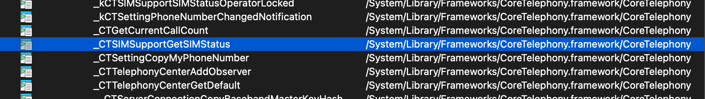
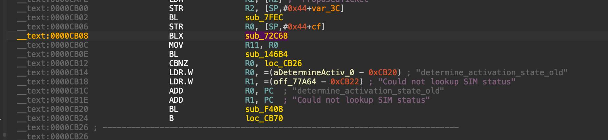

Lockdownd Patch (A4)
Here i will use IDA pro to do the patch.
first open lockdownd with IDA pro, then select view -> Open subviews -> Imports.
Now we need to find an exotic function it is SIM check function named _CTSIMSupportGetSIMStatus.
The function _CTSIMSupportGetSIMStatus is an internal API within the CoreTelephony Framework, designed to query the readiness state of the SIM.The function returns an integer value in the R0 register (per the ARM calling convention), representing states such as SIM_STATUS_READY, SIM_STATUS_NOT_INSERTED, or SIM_STATUS_LOCKED. In the context of Reverse Engineering the lockdownd process, identifying this function is critical as it serves as the entry point for the subsequent device validation chain. Hacktivation patches operate by intervening in the Control Flow Graph immediately following this function call, specifically by replacing the legitimate BL (Branch with Link) instruction leading to the official validation routine with an B (Unconditional Branch) instruction that redirects execution flow to an injected payload. This payload then proceeds to spoof the necessary SSL/XPC responses, effectively forcing lockdownd to accept a fake activation ticket without authenticating with the Apple servers.

Now double click on the _CTSIMSupportGetSIMStatus function ,IDA will take you to the import declaration area.

Now right click , select Jump to xref to operand A list will appear, listing all the places in the code that are calling this function. For me there will be 4 columns to look for in this list, When you find the MOV R11, R0 section located right below the BLX sub_72C68 instruction, that address is where the patch occurs
Try clicking on each column one by one until you find the desired result, if you did it correctly it should look like this.


Now focus on the function that needs patching BL sub_146B4 and put the cursor before BL , then replace the first 4 bytes -> 7D E2 00 00.
This hexcode is the focus of the patch, it represents a redirection of the execution flow: Specifically, this 4-byte code is inserted in place of the BL sub_146B4 instruction at offset 0xCB0E. Its function is to replace the call to Apple's authenticator function with an unconditional jump (B 0xD00C), forcing the program to skip the entire certificate check and SIM validation process. In short, it is a bridge from the original code to the injected Hacktivation code.
The final result should look like this.

Finally apply the patch directly in IDA or replace the hex code and put lockdownd back on the device with chmod permissions, reboot the device and it will be activated